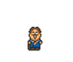

Prefeito

O administrador do vilarejo. Ele organiza os festivais e eventos sazonais.
- Papel: Explica as regras dos festivais.
- Local: Geralmente em frente à Prefeitura ou na Praça.

O administrador do vilarejo. Ele organiza os festivais e eventos sazonais.